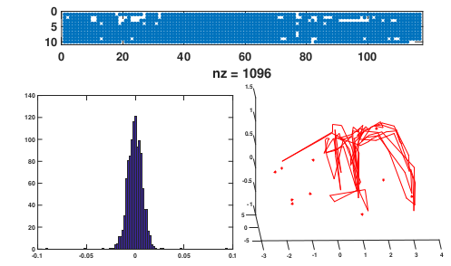
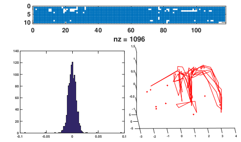
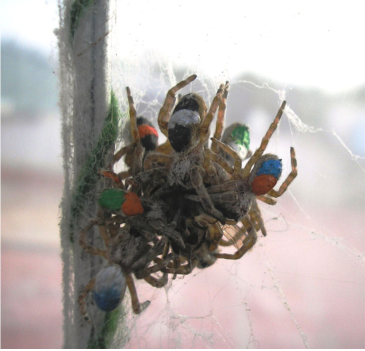
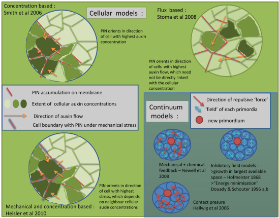

Publications
2019
 
Beleyur, T., & Goerlitz, H. R. (2019). Modeling active sensing reveals echo detection even in large groups of bats. Proceedings of the National Academy of Sciences, 116(52), 26662-26668.
Batstone, K., Flood, G., Beleyur, T., Larsson, V., Goerlitz, H. R., Oskarsson, M., & Åström, K. (2019, May). Robust Self-calibration of Constant Offset Time-difference-of-arrival. IEEE International Conference on Acoustics, Speech and Signal Processing (ICASSP) (pp. 4410-4414). IEEE.
2018
Kamburov, A., Goerlitz, H. R., Beleyur, T., 2018, Geospatial modelling inside the "Orlova Chuka" cave in Bulgaria, non-peer reviewed conference contribution, XXVIII International Symposium on Modern Technologies and Professional Practise in Geodesy and related fields
2015
Beleyur, T., Bellur, D. U., & Somanathan, H. (2015). Long-term behavioural consistency in prey capture but not in web maintenance in a social spider. Behavioral Ecology and Sociobiology, 69(6), 1019-1028.
2013
Beleyur, T., Abdul Kareem, V. K., Shaji, A., & Prasad, K. (2013). A mathematical basis for plant patterning derived from physico‐chemical phenomena. Bioessays, 35(4), 366-376.